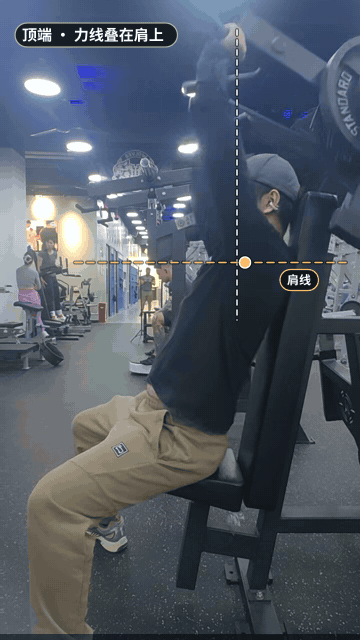
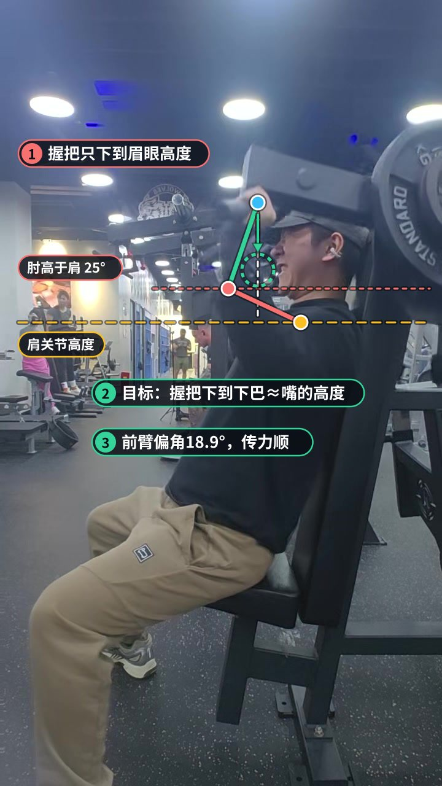
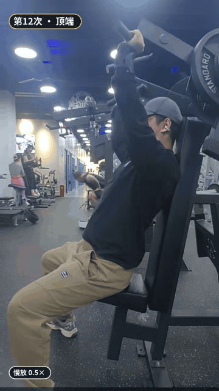
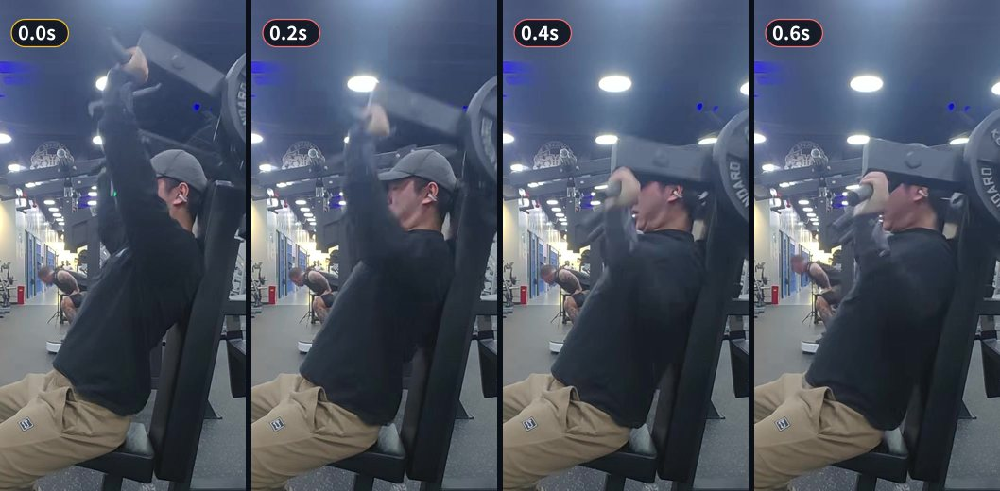
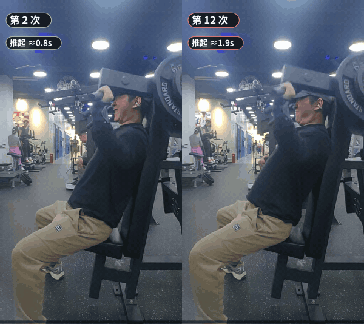
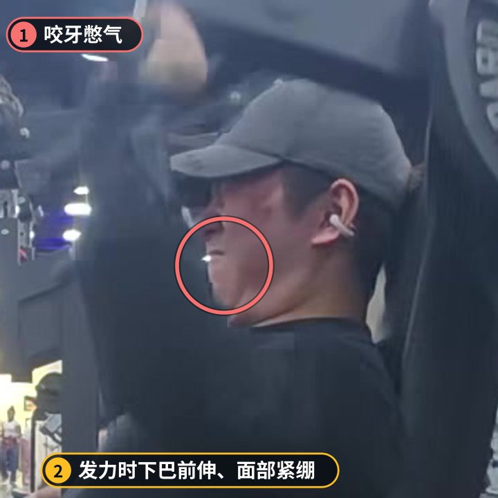

影响最大
下放幅度偏浅
底部握把在眉眼高度就折返，肘部高于肩线约 {elbow_depth}°，相当于每次只做了动作的上 2/3。器械推肩的增肌刺激很大一部分来自下半程的拉伸。
怎么改座椅调高 1–2 格，让起始时握把落在下巴到嘴的高度，肘部大约平行或略低于肩。肩部有不适就停在无痛的最低点。
一组 12 次，做到接近力竭，躯干稳定、顶端力线干净。主要扣分在下半程：下放太浅、下放太快，最后一次几乎是砸回去的。

推举类动作的力线是“握把 → 前臂 → 肩关节”这条传力路线。路线越接近竖直，越能把重量直接压在肩关节上方，三角肌发力也越纯粹。

顶端：握把到肩关节的连线和铅垂线只差约 {force_top}°，重量正压在肩上方，手臂接近伸直但没有猛锁肘。背部贴靠垫，臀部没有离座借力。

底部：前臂基本竖直，传力路线没问题。问题在深度：握把停在眉眼高度，肘部还在肩线上方就开始推，三角肌最有效的拉伸段被跳过了。
12 次里背部始终贴住靠垫，没有为了推起来而后仰、拱腰或抬臀。到力竭阶段也没变形，这一点很多人做不到。
每次握把轨迹几乎重合，顶端力线落在肩关节正上方，说明座位前后位置和握法基本合适。
前 9 次推起约 1 秒，最后 3 次明显变慢到 1.5–1.9 秒，这是接近力竭的典型信号，这组是有效组。
底部握把在眉眼高度就折返，肘部高于肩线约 {elbow_depth}°，相当于每次只做了动作的上 2/3。器械推肩的增肌刺激很大一部分来自下半程的拉伸。
第 12 次推到顶后停了约 1 秒，之后 0.4 秒内握把直接落回底部。力竭时肩关节最不稳定，这一下是整组里受伤风险最高的瞬间。


前 9 次的下放都在 0.9–1.0 秒，基本是让重量自己落下来。离心阶段同样产生大量肌肉张力，放得太快等于白送一半的训练效果。

后半组每次在底部发力时都咬紧牙、下巴往前顶。短暂憋气稳定躯干没问题，但头往前探会让颈部和斜方肌上部抢活。

推起时间从第 10 次开始拉长，说明在接近力竭；下放时间始终在 1 秒左右，没有进入 2–3 秒的目标区间。
逐帧读取，每个数字误差约 ±0.2 秒。第 1 次从静止起推，通常偏慢。
这是这个动作的第一条记录，之后的训练都会和它对比。
| 指标 | 本次 | 目标 | 评估 |
|---|---|---|---|
| 顶端力线偏角 | 5.5° | 0–8° | 达标 |
| 底部上臂角（肘高于肩为正） | 25° | -15–0° | 未达标 |
| 底部前臂偏角 | 18.9° | 0–20° | 达标 |
| 次数 | 12 次 | — | |
| 平均推起用时 | 1.2s | — | |
| 典型下放用时 | 1s | 2–3s | 未达标 |
| 最快一次下放 | 0.4s | 1.5–3s | 未达标 |
| 末次推起减速 | 54.4% | 30–60% | 达标 |
坐好后握把应在下巴到嘴的高度，肘部大约与肩平行。
下放 3 秒，底部不停顿，推起 1 秒。重量不变，接受次数下降。
底部吸气，过半呼气；后脑勺贴住靠垫，下巴微收。
控制不住下放就结束这组，或请同伴在顶端帮扶。